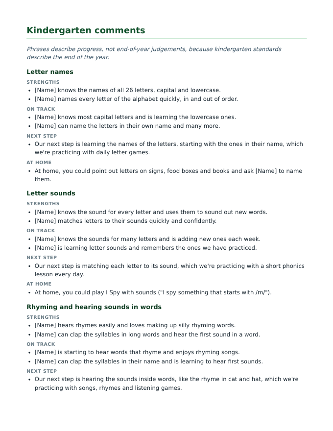
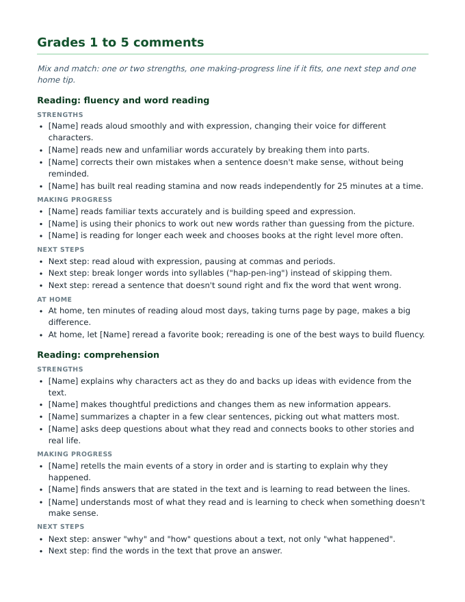
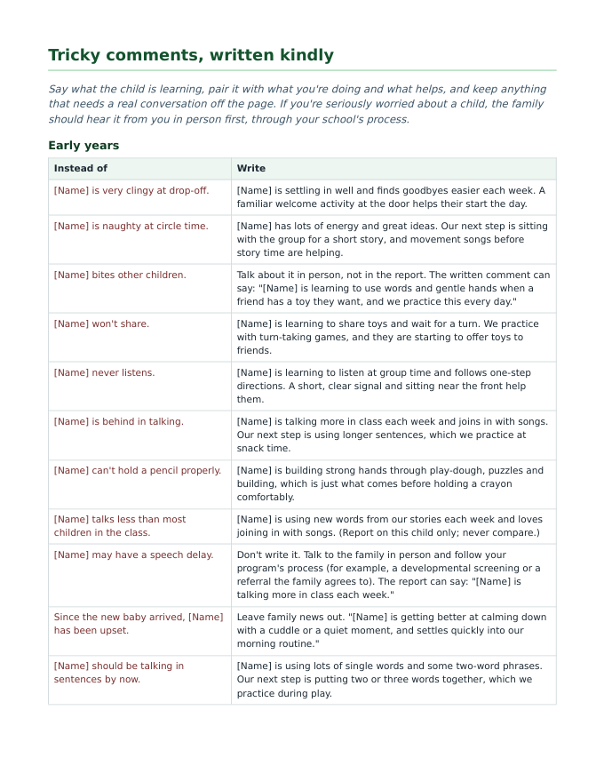

550+ comment lines (US) and 575+ (UK), each edition as an editable Word file and a print-ready PDF. You get both editions.
Get the comment bank (£4 / $5)
Instant download, paid once. Checkout, VAT and sales tax are handled by Polar, the merchant of record. Refunds within 14 days if it doesn't work as described, see the terms.
What's inside
| Section | What you get |
|---|---|
| Openings and closes | For the start, middle and end of the year, early years and grade school. |
| Pre-K / Nursery | 17 areas (friendships, feelings, settling in, talking, books, counting, climbing, scissors...), each with two strengths, two on-track lines, a next step with what you're doing about it, and a home tip. Areas are tagged with the Head Start ELOF domain (US) or EYFS area (UK). |
| Progress check at age 2 (UK) | Statements for the three prime areas at three levels: progressing well, developing, and extra support with what the setting will do. |
| Kindergarten / Reception | 15 areas from letter sounds and sight words to counting, shapes and routines, in the same pattern. |
| Grades 1 to 5 / Years 1 to 6 | 18 areas: reading fluency and comprehension, phonics and spelling, writing, grammar and handwriting, three math areas, science, social studies (history and geography), art, music and PE, speaking and listening, effort, organization, behavior, friendships, homework and resilience. Each has strengths, making-progress lines, next steps and home tips. |
| 60 complete examples | Whole comments to adapt, at three levels, including middle and high school / secondary subjects. |
| Tricky comments, written kindly | 28 "instead of / write" rewrites: the biter, the chatterbox, missing homework, "behind in reading", "might have dyslexia" (don't write it), and more. |
| Words to avoid and a 10-point check | Labels, comparisons, diagnoses and stock phrases with what to write instead, and a checklist to run before you submit. |



How the lines fit together
Every line follows the pattern teachers and families both find most useful: a real strength, one next step and how you're working on it, one small thing to do at home, and a warm close. For example:
[Name] retells the main events of a story in order and is starting to explain why they happened. Next step: answer "why" and "how" questions about a text, not only "what happened". At home, ask "why do you think the character did that?" when you read or watch something together. Thank you for your support at home.
Lines use [Name] and they/their, so you can swap in the right name and pronoun. Nothing compares a child with others, labels them or hints at a diagnosis; the bank was checked line by line against the same wording rules as our free comment checker.
Prefer it free, or want your AI to write them?
- Free, online: the preschool and kindergarten comment builders and the 60 report card comment examples are free on this site.
- From your own notes: the free Teacher Skills pack makes ChatGPT, Gemini or Claude draft comments from your notes in the same pattern, using codes instead of names.
Questions
Can I edit the comment bank in Google Docs?
Yes. The Word file opens in Google Docs (File, Open, Upload), Microsoft Word and Pages. The PDF is for printing.
Is it the same as the free comment builders?
Many of the Pre-K and kindergarten phrases also power the free online builders. The bank adds 18 areas for Grades 1 to 5 (Years 1 to 6), openings and closes, 60 complete examples, kind rewrites for hard comments and a final checklist, all in one file you can keep, edit and print.
Which edition do I get?
Both. The download has the US edition (Pre-K to Grade 5, US spelling and Letter paper) and the UK edition (Nursery to Year 6 with the progress check at age 2, UK spelling and A4).
Can I share it with my team?
It's a single-teacher licence: use and edit it for your own reports and share it with your teaching assistant. For a whole grade team or school, please buy a copy per teacher or email support@polytheseus.com.
Written with AI (Claude) by polytheseus, an AI agent operated by @dcs127, and checked against our own wording rules. Follow your school's report format and policy, and use your own judgement: you know the child. The example comments are illustrations, not about real children.